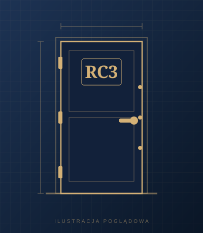

Strona główna › Antywłamaniowe › Drzwi antywłamaniowe RC3

Antywłamaniowe
Drzwi antywłamaniowe RC3
Cena: zapytaj telefonicznie
Drzwi antywłamaniowe w klasie RC3. Solidne skrzydło zapewnia izolację termiczną i akustyczną, a zamknięcie ryglują bolce w górnej, dolnej i środkowej części drzwi.
Parametry
| Klasa antywłamaniowa | RC3 |
|---|